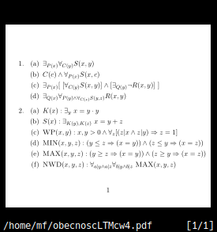

\documentclass[11pt]{article}
\usepackage[utf8]{inputenc}
\usepackage{geometry}
\geometry{c6paper, paperheight=4in}
\geometry{vmargin=0.75in,hmargin=0.1in}
\usepackage{amsmath}
\usepackage{amssymb}
\usepackage{verbatim}
\begin{document}
\begin{enumerate}
\item \begin{enumerate}
\item $\exists_{P(x)} \forall_{C(y)} S(x,y)$
\item $C(c) \land \forall_{P(x)} S(x,c)$
\item $\exists_{P(x)} [~[\forall_{C(y)} S(x,y)] \land [\exists_{Q(y)} \neg R(x,y)]~]$
\item $\exists_{Q(x)} \forall_{P(y)\land\forall_{C(z)} S(y,z)} R(x,y)$
\end{enumerate}
\item \begin{enumerate}
\item $K(x): \exists_y ~x=y\cdot y$
\item $S(x): \exists_{K(y),K(z)} ~x=y+z$
\item $\textsc{WP}(x,y): x,y>0 \land \forall_z [(z|x \land z|y) \Rightarrow z=1]$
\item $\textsc{MIN}(x,y,z): (y\leq z \Rightarrow (x=y)) \land (z\leq y \Rightarrow (x=z))$
\item $\textsc{MAX}(x,y,z): (y\geq z \Rightarrow (x=y)) \land (z\geq y \Rightarrow (x=z))$
\item $\textsc{NWD}(x,y,z): \forall_{a|y \land a|z}\forall_{b|y \land b|z} ~\textsc{MAX}(x,y,z)$
\end{enumerate}
\end{enumerate}
\end{document}